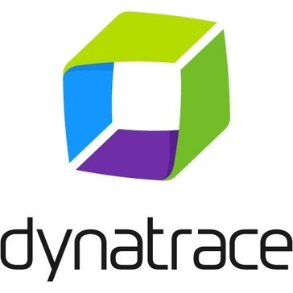
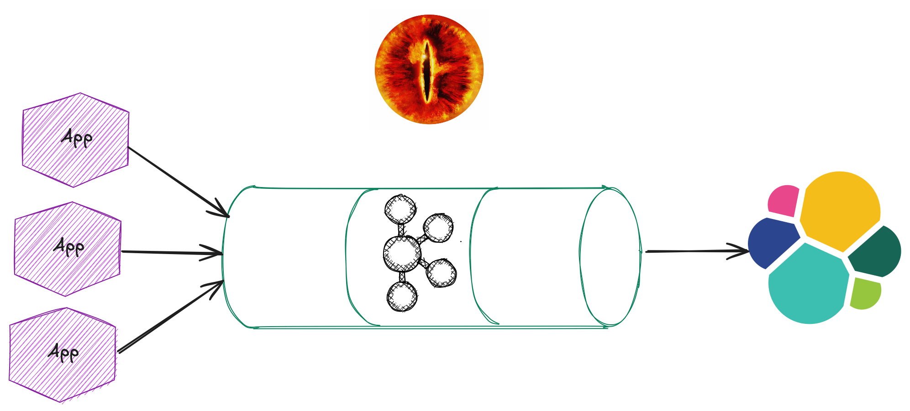
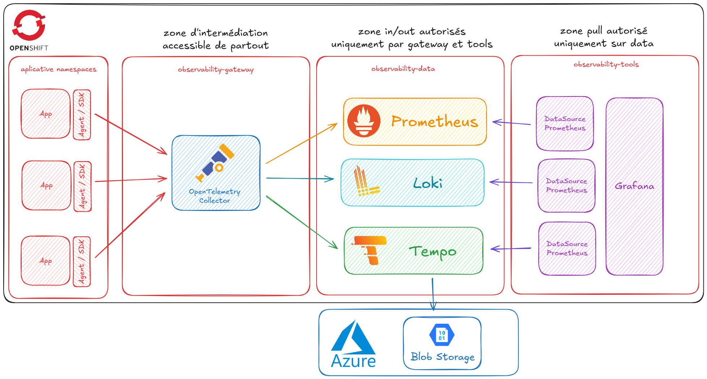
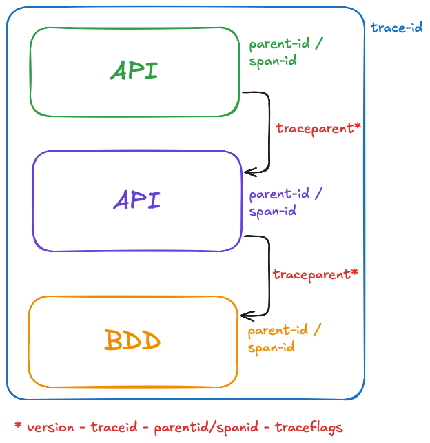
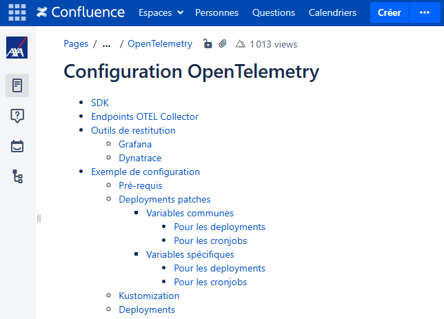

OpenTelemetry en Production
REX d'un Voyage Vers l'Observabilité Moderne
Who am I
Maximilien Chevalier
- Staff Engineer @ Axa France
- 🎓 Enseignant vacataire @ Université de Lille
- 🍃 Spring Boot lover
- 🐋 Kubernetes adopter
Road to OpenTelemetry
Axa FR et l'Observabilité
Plein de solutions différentes
|  |
Dynatrace
- Gourmand en ressources
- Agent intrusif
- Uniquement pour les systèmes critiques
Vigi
- Application historique développée en interne
- Configuration manuelle
- Mode scrape pour brancher les systèmes/application
AppInsights
- Très bien intégré au sein des assets Azure
- Support OpenTelemetry pour exporter les data
- Surcouche à l'agent OpenTelementry
- Vendor locking
EOS / OSIA (Outil de Suivi Inter-Applicatif)
- axa-correlation-id / axa-feature-name / axa-feature-id
- format de logs standard : {Timestamp};{MachineName};{ThreadName};{RequestId};{Severity};{ApplicativeCode};{ErrorCode};{CorrelationId};{SessionId};{ProcessName};{Message};{StackTrace}
Pas de solution optimale
Le POC Axa FR
🔧 Avant le collecteur
📜 Conventions et gouvernance
- Définir un schéma unique pour service.name (ex : team.domain.service ou product-service-env)
- Standards de tags/attributs : env, region, cluster, zone, version, owner, team
env:
- name: OTEL_SERVICE_NAME
value: "AFA@1234@1234-APISouscription"
- name: OTEL_NAMESPACE
valueFrom:
fieldRef:
fieldPath: metadata.namespace
- ...
🔗 Propagation de contexte
- W3C Trace Context : vérifier que tous les frameworks et clients l'implémentent
- Baggage (utiliser avec parcimonie)
- Baggage | OpenTelemetry
🤖 Auto-instrumentation vs ✍️ instrumentation manuelle
- Auto-instr: rapide, mais vérifier la qualité des spans auto-créés (noms, attributes)
- Manuelle: pour le business logic, durable et sémantique
- Spring Boot starter | OpenTelemetry
👨💻 Developer experience
- Tooling local : collector local/agent pour dev, debug facile
- Documentation claire et exemples d'instrumentation
- Formation et sensibilisation des devs
- Centralisation pour simplifier l'accès aux outils et aux ressources (ex: IDP, wiki)
⚙️ Le collecteur
🌐 Topology de déploiement
- No Collector vs Agent vs Collector centralisé
- Compromis : latence, résilience, coût, isolation réseau
- Deployment | OpenTelemetry
SPOF ?
- Tuning fin nécessaire pour le collector
- Énorme throughput/volumétrie sur une architecture centralisée
- Que faire si un exporter tombe ? Backlog sur disque, dead-letter ?
- Tester la charge d'ingestion à l'avance (simuler du trafic) pour dimensionner les pipelines.

🎲 Sampling (head vs tail)
- Définir un sampling « head » conservateur (ex: 1-10%) et planifier tail-based sampling côté collector
- Le sampler applique un pourcentage d'échantillonnage sur le TraceID et reconnaît l'annotation sampling.priority
- Vous n'aurez pas le même besoin sur l'environnement de production par rapport à l'environnement de développement.
- Sampling | OpenTelemetry
La configuration du collector - Processor
La configuration du collector - Services
🧠 Memory & 🖥️ CPU limits
- Le collector consomme beaucoup de mémoire si mal configuré (tail sampling, grosses files d'attente).
- Définir le bon nombre de replicas pour le collector en fonction de la charge attendue.
- Configurer limits, requests, HPA/Cluster autoscaler.
- Configurer la variable d'environnement GOMEMLIMIT Best Practices | Memory Limiter Processor
🧐 Observability du collector
- Le collector doit exporter ses propres metrics, logs et endpoints de santé.
- Scraper ou envoyer les metrics du collector vers Prometheus.
💾 Configuration as Code & 🤖 CI
- Stocker la configuration du collector dans Git, déployer via GitOps.
- Utiliser Helm pour faciliter la gestion des configurations Kubernetes et des mises à jour OpenTelemetry Collector Helm Chart
- Outils de visualisation de la configuration de votre collecteur | OTelBin
🔎 Après le collecteur
🗂️ Backends & rôles
La jungle du CNCF landscape
- Metrics → Prometheus (court/long terme via remote write), Cortex/Mimir pour le passage à l'échelle.
- Traces → Tempo / Jaeger / Zipkin / solutions commerciales (New Relic, Datadog).
- Logs → Loki / ELK / solutions commerciales (Splunk, Datadog).
🗄️ Rétention & 💸 Optimisation des coûts
- Politiques de rétention selon le type de donnée (metrics : long terme ; traces : court terme + archivage ; logs : court terme + indexation).
- Archivage long terme dans un object storage (S3, Blob Storage).
- Problématique Disaster Recovery si une chaîne d'appel se retrouve répartie sur 2 régions.
🔒 Sécurité & 🛂 contrôle de la donnée
- RGPD, data residency : masquer/supprimer certains attributs, gérer la rétention en conséquence.
- Masquage des PII (Personally Identifiable Information).
- Audit logs.
🔗 Requêtes & corrélation
- Corrélation trace ↔ logs ↔ metrics via trace_id / span_id / labels.
- Dashboards sur les SLO/SLA, percentiles de latence, taux d'erreur.
- Prévoir de l'alerting générique basé sur les SLOs (burn rates, seuils d'alerte)
En dehors de la partie technique
Votre DSI a un historique
- Un passage dans votre gouvernance technique vous sera sûrement demandé.
- Des outils sont déjà en place.
- Une équipe de Suivi de Production existe.
OpenTelemetry va remplacer Dynatrace ? Kibana ? Etc..
Gagnant, gagnant
OpenTelemetry + Green IT
- Les données d'instrumentation rentrent dans la balance des échanges réseau
- Attention à ne pas tout observer par défaut.
- Le sampling est votre ami.
- Le fait de centraliser plutôt que chaque process embarque son agent et son jeu de data spécifique va quand même dans le bon sens.
Récapitulatif
Merci !